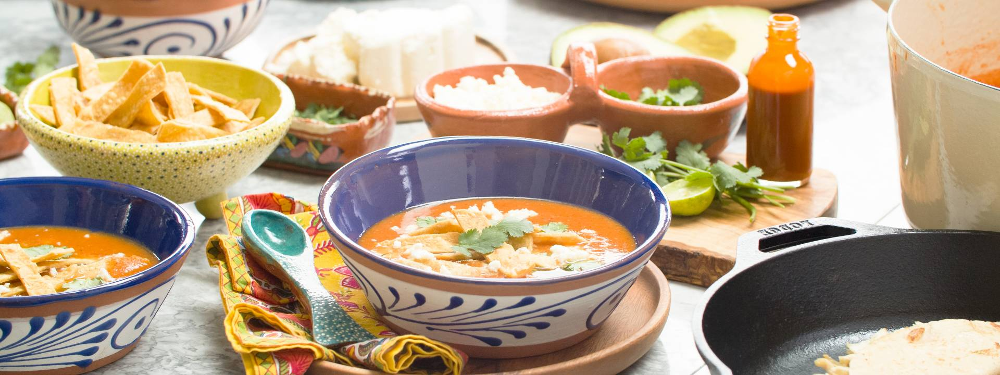

Tortilla Soup with Chicken Quesadillas and Spicy Pickles

Description
Although the exact origin of tortilla soup is unknown, it is known that it comes from the Mexico City area in Mexico. Traditional tortilla soup is made with chicken broth combined with roasted tomatoes, onion, garlic, chiles and tortillas, cut into strips and fried.
Ingredients
Chicken Stock
- 2 pounds chicken bones, raw (backs, necks, feet, etc)
- 1 yellow onion, quartered, root in tact
- 2 large carrots, washed and cut into 2” chunks
- 4 cloves garlic
- 2 teaspoons dried mexican oregano
- ½ teaspoon cumin seeds
- 2 chicken breasts, boneless skinless
Spicy Pickles (Jalapeños en escabeche)
- 1 tablespoon neutral oil, such as canola
- 1 pound jalapeños, rinsed and dried, sliced into long strips, stem and seeds removed (if desired)
- 1 pound carrots, peeled and sliced diagonally about ¼-inch thin
- ½ white onion, sliced about ¼-inch thin
- 6 cloves of garlic, peeleds
- 1 teaspoon kosher salt
- 2 bay leaves
- 1 teaspoon black peppercorns
- 1 teaspoon dried oregano, preferably Mexican
- ½ teaspoon cumin seeds
- 2 cups distilled white vinegar
- 2 cups water
Tortilla Soup
- 5 roma tomatoes
- 5 garlic cloves, peels still on
- 1 small white onion (or half large), peeled and quartered with the root attached on each quarter
- 2 dried guajillo chiles, stemmed and seeds removed, torn into large pieces
- 3 if you want it spicier!
- 3, 6-inch corn tortillas, torn into pieces
- 6-8 cups homemade chicken stock, divided
Crispy Tortilla Strips
- 6 corn tortillas, cut into ½-inch wide strips
- Vegetable oil, for frying
- Kosher salt
Chicken Quesadillas
- Shredded chicken breasts (reserved from stock)
- Good quality corn tortillas
- ½ cup shredded Oaxaca cheese
- ½ cup cheddar cheese or low-moisture mozzarella, shredded
- Spicy Pickled Veg, chopped (optional)
To serve
- Chicken Quesadillas
- Crumbled queso fresco
- Cilantro leaves
- Hot sauce of choice
- Lime wedges
Steps
- Preheat the oven to 450˚F (232˚C) and roast bones and vegetables for 45 minutes - 1 hour, until bones are caramelized.
- In a large pot, add roasted vegetables and bones, oregano and cumin and pour in 12 cups of water. Bring to a boil then reduce to a simmer. Once simmering, add the chicken breasts and let cook for about 10-15 minutes, until cooked through to 165˚F (74˚C). Remove chicken breasts from the stock and shred as soon as it’s cool enough to handle. Set aside until ready to use, preferably in an airtight container in the refrigerator.
- Let the stock simmer for at least an hour, more if you have the time, skimming off and discarding any nasties that float to the surface. Strain the stock and cool before refrigeration, if not using immediately. Stock can be stored in an airtight container in the refrigerator for up to 5 days, or 3 months in the freezer.
- Make the Spicy Pickles: Place a large, heavy-bottomed pot over medium heat. Once hot, add oil and let the oil get hot. Add vegetables and salt and saute, stirring occasionally, until starting to soften, about 5 minutes. Add spices and continue to cook for another 5-10 minutes, until vegetables are soft and onions are translucent. Lower the heat if anything starts to brown. Add vinegar and water, and let simmer for 5-10 minutes, until the jalapenos turn army green. Remove from heat and let cool before transferring to airtight containers with lids.
- Make the Tortilla Soup: Turn the broiler to high, or set a large cast iron skillet over medium-high heat. Once hot, sear tomatoes, garlic, and onion until well charred. Lightly toast the dried chiles, but do not burn them. Once charred, remove the garlic cloves from the pan and once cool enough to handle, peel and discard skins. Transfer all vegetables to a blender and add 2 cups of chicken stock and tortilla pieces. Blend until smooth.
- Pour the mixture into a large pot and add 4-6 more cups of chicken stock, depending on how thick or thin you prefer your soup (keeping in mind that the soup will thicken slightly as it cooks). Season with salt, bring to a boil and reduce the heat to a simmer, letting simmer for about 30 minutes. While the soup simmers, make your tortilla strips:
- Make the Crispy Tortilla Strips: Place a high-walled skillet over medium heat and pour in oil until it’s about ½-inch deep. Let the oil get hot for about 1 minute before adding about ⅓ of the tortilla strips (you don’t want to crowd the pan). Fry, stirring occasionally, until golden and crispy. Transfer to a paper towel-lined plate and or baking sheet sprinkle with a good amount of salt. Repeat until all tortilla strips have been fried. Set aside until ready to serve.
- Make the Chicken Quesadillas: Heat a large skillet over medium heat. Lay a tortilla on the skillet, let warm for about 30 seconds then flip (feel free to do 2 at a time if your skillet is large enough, or use 2 skillets to speed up the process). Place a good handful of shredded cheeses down in the center of the tortilla, leaving about a centimeter of space free around the edges. Top one side of the tortilla with a spoonful of shredded chicken and spicy veg, if using. Let these cook for about 30 seconds before folding in half. Cook for 1-2 minutes more, turning once or twice, until the cheese is melted and the insides are hot. Repeat as many times as you like. Cut into triangles if you prefer.
- To serve, taste the soup for seasoning and adjust if needed. Ladle soup into bowls and top with queso fresco, avocado and cilantro. Dash with hot sauce, if using, then a generous squeeze of lime over everything. Top with crispy tortilla strips and serve alongside the quesadillas.